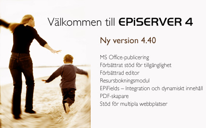

Innehåll
Formatering
Detta dokument visar hur formateringen kan bibehållas i ett Word-dokument som publiceras till EPiServer via dokumentpublicering. Notera att typsnitten för avsnitten och texten bibehålls när detta dokument publiceras som ett dokument medan det blir konverterat till webbens grafiska profil om dokumentet resulterar i en ny EPiServer-sida på webbplatsen. Notera också att den animerade gif:en längst ner på sidan får liv när man publicerar dokumentet. Du kan också titta på originaldokumentet genom att öppna det i dokumentlistan.

Dokumentnivå
Avsnitt två ligger med bara för att man ska kunna ser hur dispositionen ser ut med fler stycken. Avsnitt två ligger med bara för att man ska kunna ser hur dispositionen ser ut med fler stycken. Avsnitt två ligger med bara för att man ska kunna ser hur dispositionen ser ut med fler stycken. Avsnitt två ligger med bara för att man ska kunna ser hur dispositionen ser ut med fler stycken.
Avsnitt två ligger med bara för att man ska kunna ser hur dispositionen ser ut med fler stycken. Avsnitt två ligger med bara för att man ska kunna ser hur dispositionen ser ut med fler stycken. Avsnitt två ligger med bara för att man ska kunna ser hur dispositionen ser ut med fler stycken. Avsnitt två ligger med bara för att man ska kunna ser hur dispositionen ser ut med fler stycken. Avsnitt två ligger med bara för att man ska kunna ser hur dispositionen ser ut med fler stycken. Avsnitt två ligger med bara för att man ska kunna ser hur dispositionen ser ut med fler stycken.
|
Namn |
Funktion |
Kommentar |
|
Xeta |
Tar bra saker och gör dem bättre. |
Detta fungerar bara om alla är positiva. Om inte så bibehålls status. |
|
Ynanza |
Summerar alla positiva händelser under en dag på två minuter. |
Varning bör utfärdas om man arbetat i EPiServer hela dagen då man annars kan får chockeffekter till följd. |

Mer om området
Avsnitt tre ligger med bara för att man ska kunna ser hur dispositionen ser ut med fler stycken. Avsnitt tre ligger med bara för att man ska kunna ser hur dispositionen ser ut med fler stycken. Avsnitt tre ligger med bara för att man ska kunna ser hur dispositionen ser ut med fler stycken. Avsnitt tre ligger med bara för att man ska kunna ser hur dispositionen ser ut med fler stycken.
|
X |
Y |
|
Z |
? |
Avsnitt tre ligger med bara för att man ska kunna ser hur dispositionen ser ut med fler stycken. Avsnitt tre ligger med bara för att man ska kunna ser hur dispositionen ser ut med fler stycken. Avsnitt tre ligger med bara för att man ska kunna ser hur dispositionen ser ut med fler stycken. Avsnitt tre ligger med bara för att man ska kunna ser hur dispositionen ser ut med fler stycken.
Vi går på djupet
Avsnitt fyra ligger med bara för att man ska kunna ser hur dispositionen ser ut med fler stycken. Avsnitt fyra ligger med bara för att man ska kunna ser hur dispositionen ser ut med fler stycken. Avsnitt fyra ligger med bara för att man ska kunna ser hur dispositionen ser ut med fler stycken. Avsnitt fyra ligger med bara för att man ska kunna ser hur dispositionen ser ut med fler stycken. Avsnitt fyra ligger med bara för att man ska kunna ser hur dispositionen ser ut med fler stycken. Avsnitt fyra ligger med bara för att man ska kunna ser hur dispositionen ser ut med fler stycken. Avsnitt fyra ligger med bara för att man ska kunna ser hur dispositionen ser ut med fler stycken. Avsnitt fyra ligger med bara för att man ska kunna ser hur dispositionen ser ut med fler stycken. Avsnitt fyra ligger med bara för att man ska kunna ser hur dispositionen ser ut med fler stycken. Avsnitt fyra ligger med bara för att man ska kunna ser hur dispositionen ser ut med fler stycken.
Vad är meningen
Denna text är bara utfyllnad. Denna text är också bara utfyllnad. Denna text är bara utfyllnad. Denna text är bara utfyllnad. Denna text är också bara utfyllnad. Denna text är bara utfyllnad. Denna text är bara utfyllnad. Denna text är bara utfyllnad.
Denna text är bara utfyllnad. Denna text är också bara utfyllnad. Denna text är bara utfyllnad. Denna text är bara utfyllnad. Denna text är också bara utfyllnad. Denna text är bara utfyllnad. Denna text är bara utfyllnad. Denna text är bara utfyllnad.
Hur går det till
Denna text är bara utfyllnad. Denna text är också bara utfyllnad. Denna text är bara utfyllnad. Denna text är bara utfyllnad. Denna text är också bara utfyllnad. Denna text är bara utfyllnad. Denna text är bara utfyllnad. Denna text är bara utfyllnad.
Varför inte
Denna text är bara utfyllnad. Denna text är också bara utfyllnad. Denna text är bara utfyllnad. Denna text är bara utfyllnad. Denna text är också bara utfyllnad. Denna text är bara utfyllnad. Denna text är bara utfyllnad. Denna text är bara utfyllnad.
Nästa steg
Avsnitt fyra ligger med bara för att man ska kunna ser hur dispositionen ser ut med fler stycken. Avsnitt fyra ligger med bara för att man ska kunna ser hur dispositionen ser ut med fler stycken. Avsnitt fyra ligger med bara för att man ska kunna ser hur dispositionen ser ut med fler stycken. Avsnitt fyra ligger med bara för att man ska kunna ser hur dispositionen ser ut med fler stycken.
Sammanfattning
Avsnitt fem ligger med bara för att man ska kunna ser hur dispositionen ser ut med fler stycken. Avsnitt fem ligger med bara för att man ska kunna ser hur dispositionen ser ut med fler stycken. Avsnitt fem ligger med bara för att man ska kunna ser hur dispositionen ser ut med fler stycken. Avsnitt fem ligger med bara för att man ska kunna ser hur dispositionen ser ut med fler stycken.